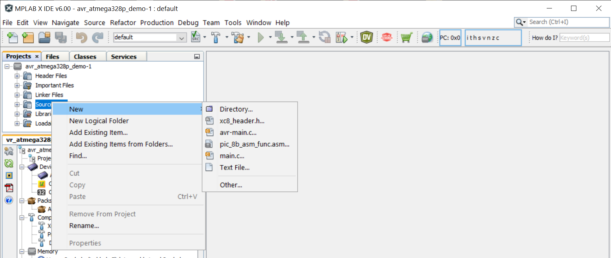
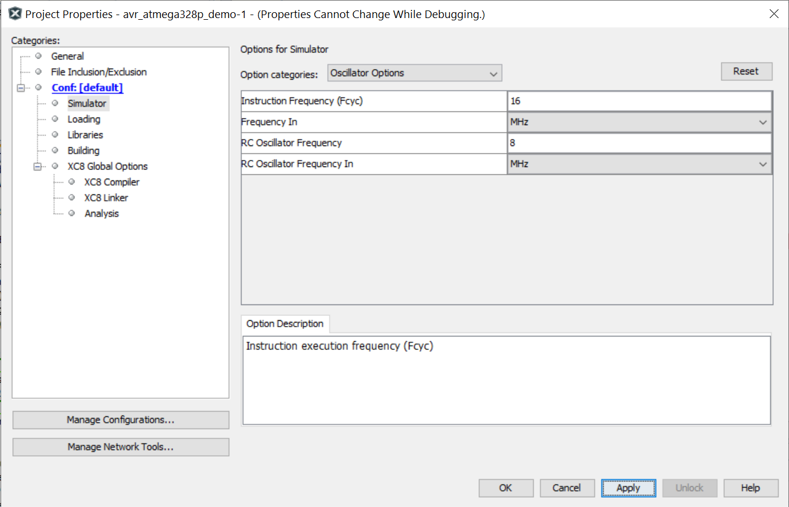
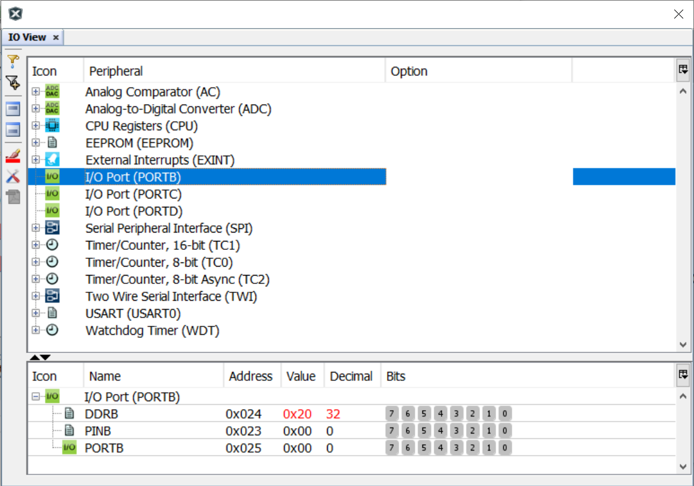
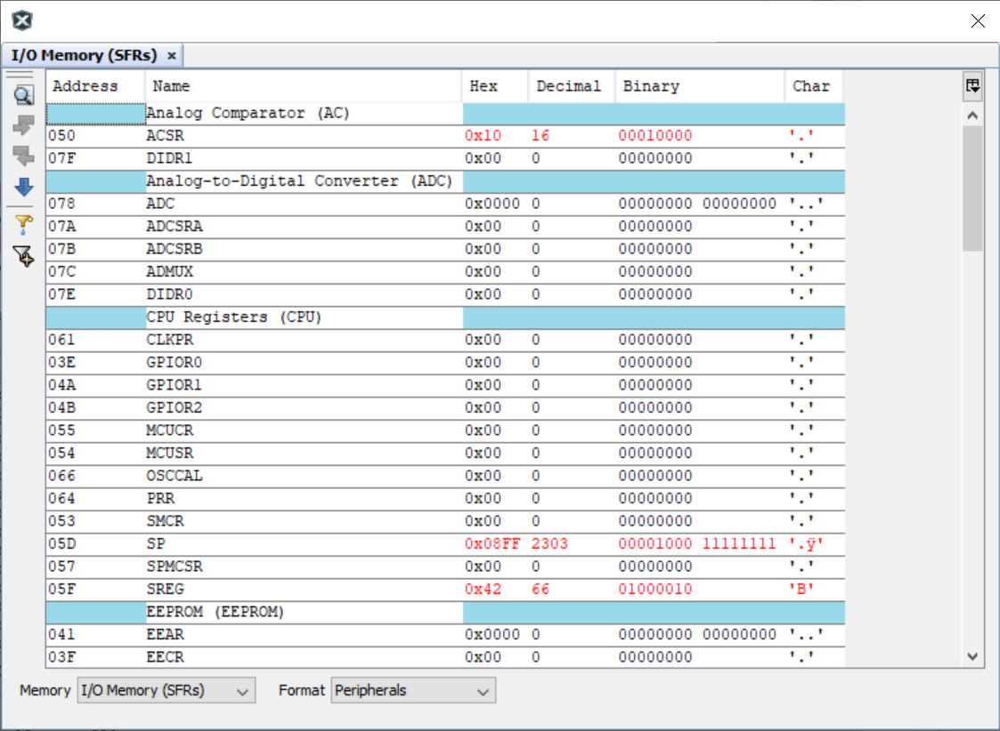
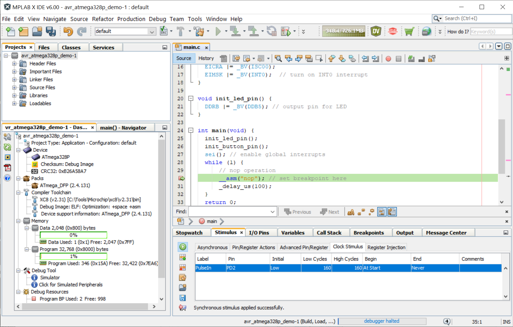
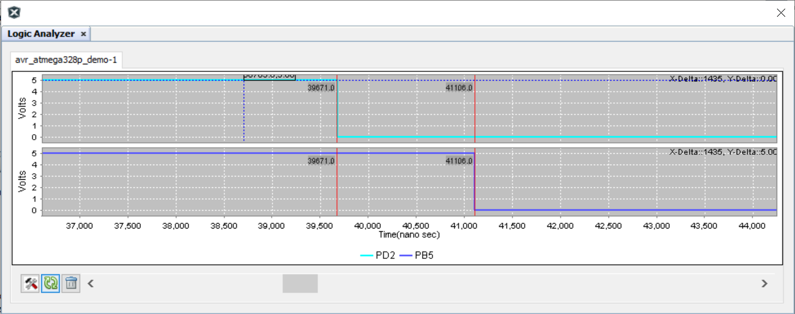

การใช้งานซอฟต์แวร์ MPLAB-X IDE สำหรับ AVR ในเบื้องต้น#
Keywords: Atmel/Microchip AVR MCUs, ATmega328P, MPLAB-X IDE
▷ MPLAB-X IDE vs. MPLAB Xpress IDE#
บทความนี้นำเสนอการทดลองใช้งานซอฟต์แวร์ MPLAB-X IDE v6.0.0 ร่วมกับ XC8 C Compiler v2.31 ของบริษัท Microchip ในเบื้องต้น และสาธิตการเขียนโปรแกรมภาษา C สำหรับไมโครคอนโทรลเลอร์ AVR MCU เช่น ATMega328P
หลังจากที่บริษัท Microchip ได้เข้าควบรวมกิจกรรมของบริษัท Atmel ในปีค.ศ. 2016 ก็ได้พัฒนาให้ซอฟต์แวร์ MPLAB-X IDE (ตั้งแต่เวอร์ชัน v5.05 และเปิดให้ดาวน์โหลดไปใช้งานในเดือนตุลาคม ค.ศ. 2018) และ MPLAB Xpress IDE รองรับการใช้งานไมโครคอนโทรลเลอร์ของบริษัท Atmel สำหรับ AVR (8 บิต) และ SAM (32 บิต)
ในช่วงต่อมาได้มีการปรับปรุงซอฟต์แวร์ Atmel Studio 7 IDE ภายใต้ชื่อใหม่คือ Microchip Studio IDE แต่ผู้ใช้คงจะต้องพิจารณาเลือกเองว่า จะใช้ซอฟต์แวร์ใดเป็นหลักในการทำงานต่อไปอนาคต หากว่า ยังใช้ชิปไมโครคอนโทรลเลอร์ของ Atmel
จุดเด่นข้อหนึ่งของ MPLAB-X IDE คือ เป็นซอฟต์แวร์ประเภท Cross-platform มีให้เลือกใช้ได้สำหรับระบบปฏิบัติการ Windows, Linux และ Mac OS X ในขณะที่ Microchip Studio IDE จะใช้ได้เฉพาะกับระบบปฏิบัติการ Windows เท่านั้น
ซอฟต์แวร์รองรับไมโครคอนโทรเลอร์ในตระกูลต่าง ๆ ของบริษัท Atmel / Microchip ที่มีให้เลือกทั้งตัวประมวลผลแบบ 8 บิต ไปจนถึง 32 บิต ผู้ใช้สามารถทำขั้นตอนดีบักโค้ดโดยใช้ตัวจำลองการทำงาน (Simulator) เช่น สำหรับ AVR, SAMC/SAMD และ PIC32/PIC32C เป็นต้น
รูป: MPLAB-X Desktop IDE (v6.0.0) สาธิตการเขียนโค้ดภาษา C สำหรับ AVR MCU
▷ ขั้นตอนการใช้งาน#
หากยังไม่เคยใช้งานซอฟต์แวร์มาก่อน ให้ผู้ใช้ดาวน์โหลดและติดตั้งซอฟต์แวร์ MPLAB-X IDE และ XC8 C Compiler ในเครื่องคอมพิวเตอร์ของผู้ใช้ก่อน (สำหรับบทความนี้ ได้ทดลองใช้ซอฟต์แวร์สำหรับระบบปฏิบัติการ Windows 10)
ขั้นตอนการทดลองใช้งานเบื้องต้น มีดังนี้
- สร้างโปรเจกต์ใหม่ พร้อมระบุชื่อโปรเจกต์และเลือกชิปไมโครคอนโทรลเลอร์ AVR
- สร้างไฟล์
main.cในโปรเจกต์ใหม่ สำหรับเขียนโค้ด - ลองเขียนโค้ดตามตัวอย่างและทำขั้นตอน Build Project เพื่อคอมไพล์โค้ด
- ทดลองการทำงานของโปรแกรมโดยวิธีดีบักโค้ด (Source-Level Debugging) โดยใช้ตัวจำลองการทำงาน (Simulator) เพื่อช่วยในการตรวจสอบหรือหาข้อผิดพลาดในการทำงานของโค้ด
- เลือกบรรทัดของโค้ดในไฟล์
main.cเพื่อใช้เป็นตำแหน่งของ Breakpoints เมื่อมีการทำคำสั่งมาถึงบรรทัดดังกล่าว จะมีการหยุดทำคำสั่งชั่วคราว หรือจะทำคำสั่งต่อไปก็ได้ - ดูการเปลี่ยนแปลงที่เกิดขึ้นกับฮาร์ดแวร์ เช่น รีจิสเตอร์ต่าง ๆ ของซีพียู ตัวแปรที่มีอยู่ภายในโปรแกรม เป็นต้น
▷ การสร้างโปรเจกต์ใหม่#
เริ่มต้นด้วยการเปิดใช้งานซอฟต์แวร์ MPLAB-X IDE แล้วสร้างโปรเจกต์ใหม่
รูป: เริ่มต้นขั้นตอนการสร้างโปรเจกต์ใหม่
รูป: เลือกรูปแบบของโปรเจกต์ใหม่ เป็นแบบ Standalone Project
รูป: เลือกชิปไมโครคอนโทรลเลอร์ ในตัวอย่างนี้คือ ATmega - ATmega328P และเลือกเครื่องมือ Tool - Simulator สำหรับการตรวจสอบการทำงานด้วยตัวจำลองการทำงาน (ไม่ได้ใช้อุปกรณ์สำหรับการดีบักโปรแกรมด้วยฮาร์ดแวร์จริง)
รูป: เลือกซอฟต์แวร์ Compiler Toolchains ที่จะใช้สำหรับการคอมไพล์โค้ดในโปรเจกต์ ในตัวอย่างนี้ได้เลือกใช้ Microchip XC8 C Compiler
รูป: ระบุชื่อของโปรเจกต์ใหม่และไดเรกทอรีสำหรับเก็บไฟล์ต่าง ๆ ของโปรเจกต์
เมื่อได้สร้างโปรเจกต์ใหม่สำหรับ ATmega328P แล้ว ถัดไปให้สร้างไฟล์ main.c
ให้เป็นส่วนหนึ่งของโปรเจกต์ สำหรับทดลองเขียนโค้ด

รูป: สร้างไฟล์เพิ่มในโปรเจกต์สำหรับเขียนโค้ด (File > New > main.c)
รูป: ตั้งชื่อไฟล์เป็น main.c
โค้ดตัวอย่างต่อไปนี้ สาธิตการเขียนคำสั่งเพื่อทำให้ขา GPIO หมายเลข PB5 ของไมโครคอนโทรลเลอร์
ATmega328P สลับสถานะลอจิกทุก ๆ 100 มิลลิวินาที โดยใช้การรอเวลาและเรียกใช้ฟังก์ชัน _delay_ms(...)
และ หากใช้บอร์ด Arduino Uno หรือ Nano จะพบว่า มีวงจร LED อยู่บนบอร์ดแล้วที่ขา PB5
หรือ Arduino D13 Pin
ให้ลองคอมไพล์โค้ดตัวอย่าง เพื่อตรวจสอบความถูกต้องในเบื้องต้น โดยทำคำสั่งจากเมนู Production > Build Project
#define F_CPU 16000000UL // CPU clock speed
// This header file is included when using the XC8 compiler.
#include <xc.h>
#include <util/delay.h> // for _delay_ms()
int main(void) {
DDRB |= _BV(DDB5); // set PB5 pin as output
while(1) {
PORTB |= _BV(PB5); // output high to PB5 pin
_delay_ms( 100 ); // busy-wait delay for 100ms
PORTB &= ~_BV(PB5); // output low to PB5 pin
_delay_ms( 100 ); // busy-wait delay for 100ms
}
return 0;
}
รีจิสเตอร์ DDRB เกี่ยวข้องกับการกำหนดทิศทางอินพุตหรือเอาต์พุตที่ขาของพอร์ต B
ดังนั้นจะต้องกำหนดให้บิตในตำแหน่งที่ 5 ของรีจิสเตอร์ มีค่าเป็น 1 เพื่อใช้งานขา PB5 เป็นเอาต์พุต
(1 หมายถึง เอาต์พุต และ 0 หมายถึง อินพุต)
การกำหนดสถานะลอจิกสำหรับเอาต์พุตของพอร์ต B เกี่ยวข้องกับการทำงานของรีจิสเตอร์ PORTB
ดังนั้นการเซตหรือเคลียร์บิตที่ 5 ของรีจิสเตอร์ดังกล่าว จะเป็นตัวกำหนดสถานะลอจิก HIGH หรือ LOW ตามลำดับ
ในไลบรารี avr-libc มีฟังก์ชัน _delay_ms(...) ซึ่งทำหน้าที่หน่วงเวลาแบบ busy-wait delay
และได้ถูกการประกาศเอาไว้ในไฟล์ util/delay.h เป็นแบบ inline function
ดังนั้นเมื่อเรียกใช้ฟังก์ชันนี้ (Function Call) คอมไพเลอร์จะแทนที่คำสั่งเรียกฟังก์ชันด้วยโค้ดที่อยู่ภายในฟังก์ชันดังกล่าว
static inline void _delay_ms(double __ms) __attribute__((always_inline));
นอกจากนั้น จะต้องมีการกำหนดค่าของสัญลักษณ์ F_CPU เพื่อระบุความถี่ที่ใช้ในการทำงานของซีพียู AVR
ในฟังก์ชัน _delay_ms(...) จะมีการเรียกใช้ฟังก์ชันอีกฟังก์ชันหนึ่งชื่อ
_delay_loop_2(...) ที่ทำคำสั่งแบบวนลูป (Delay loop)
เพื่อนับนับถอยหลังทีละหนึ่งจากค่าเริ่มต้น หนึ่งรอบของการนับใช้เวลา 4 ไซเคิล
เช่น ถ้าความถี่ F_CPU เท่ากับ 1MHz จะนับถอยหลังโดยใช้เวลาสูงสุดไม่เกิน 262.14 มิลลิวินาที
( วินาที) ต่อการเรียกฟังก์ชันนี้หนึ่งครั้ง
void _delay_loop_2(uint16_t __count);
▷ การดีบักด้วย Software Simulator#
การดีบักโปรแกรมที่ได้จากการคอมไพล์โค้ด ทำได้สองวิธีคือ การจำลองการทำงาน (ใช้ซอฟต์แวร์ที่เรียกว่า Simulator) และวิธีที่สองคือ การใช้ฮาร์ดแวร์ซึ่งประกอบด้วยบอร์ดไมโครคอนโทรลเลอร์ และอุปกรณ์สำหรับการดีบักในวงจร (In-Circuit Debugger)
ในบทความนี้ เราจะใช้วิธีการทดสอบการทำงานของโค้ดตัวอย่างในขั้นตอนดีบัก (เมนูคำสั่ง Debug > Debug Project) โดยใช้ตัวจำลองการทำงาน ซึ่งเป็นวิธีที่สะดวก และไม่จำเป็นต้องมีอุปกรณ์จริง
การเข้าสู่ Debug Session จะมีสองขั้นตอนคือ การคอมไพล์โค้ดสำหรับดีบัก (Build for Debugging) และเริ่มต้นการทำงานของดีบักเกอร์ (Launch Debugger)
รูป: เมนูคำสั่งที่เกี่ยวข้องกับการดีบัก
ก่อนเริ่มขั้นตอนดีบัก ให้กำหนดตำแหน่งหยุดชั่วคราวของดีบักเกอร์ในโค้ด main.c เช่น อาจจะกำหนดให้บรรทัดแรกภายใน
ฟังก์ชัน main(){...} เป็นตำแหน่งหยุดแรก ตำแหน่งหยุดในลักษณะนี้เรียกว่า Breakpoint

รูป: การตั้งค่าในส่วนที่เกี่ยวข้องกับการทำงานของ Simulator เช่น การกำหนดความถี่หรือความเร็วในการทำคำสั่ง (Instruction Frequency ซึ่งมีค่า Default เท่ากับ 1MHz) เป็นต้น
รูป: เข้าสู่ Debug Session สำหรับโปรเจกต์ และมีการหยุดชั่วคราวในตำแหน่งแรกของ Breakpoint
จากรูปตัวอย่างข้างล่าง จะเห็นได้ว่า มีการกำหนดตำแหน่งหยุดไว้ที่บรรทัด 10 และ 12 ตามลำดับ ซึ่งอยู่ภายในคำสั่งวนซ้ำแบบ
while
รูป: เมื่อดีบักเกอร์ทำงานต่อไป (Continue) จะไปหยุดที่ตำแหน่งของ Breakpoint ในลำดับการทำงานถัดไป และให้สังเกตข้อความในหน้าต่าง Stopwatch
ในระหว่างการดีบัก ผู้ใช้สามารถเปิดหน้าต่างย่อยเพื่อดูสถานะการทำงานของไมโครคอนโทรลเลอร์ได้ เช่น
- Stopwatch แสดงค่าของ Cycle Count ที่มีการนับจำนวนไซเคิลของซีพียูและบันทึกเอาไว้ และแสดงค่าตัวเลขล่าสุด เมื่อมีการหยุดการทำงานของดีบักเกอร์ชั่วคราวในแต่ละครั้ง
- Window > Debugging > Variables แสดงค่าของตัวแปรที่มีการประกาศใช้ในโค้ด
- Window > Debugging > Breakpoints แสดงตำแหน่งหยุดการทำงานชั่วคราวที่ได้มีการกำหนดไว้โดยผู้ใช้
- Window > Debugging > Watches แสดงค่าของตัวแปรหรือรีจิสเตอร์เฉพาะรายการที่ได้เลือกมาโดยผู้ใช้
- Window > Debugging > Call Stack แสดงลำดับชั้นของการเรียกฟังก์ชันต่าง ๆ ในโค้ด
เช่น เริ่มต้นจากการทำงานของ Startup Code เมื่อหลังจากรีเซต
เช่น
gcrt1.Sของ avr-libc แล้วเรียกฟังก์ชันmain()ซึ่งอาจมีการเรียกฟังก์ชันอื่นต่อไปอีกในขณะทำงาน - Window > Debugging > IO View แสดงค่าในรีจิสเตอร์ที่เกี่ยวข้องกับวงจรภายในของชิป (Peripheral Registers)
- Window > Debugging > Disassembly แสดงคำสั่งในภาษาแอสเซมบลีในแต่ละฟังก์ชันที่ได้จากการแปลงโค้ดภาษา C
- Simulator > IO Pins แสดงสถานะลอจิกของขา I/O ที่ผู้ใช้เจาะจงเลือกมา

รูป: หน้าต่าง IO View แสดงค่าในรีจิสเตอร์ที่เกี่ยวข้องกับวงจรภายในของชิป เช่น การดูค่าของรีจิสเตอร์ที่เกี่ยวข้องกับการทำงานของพอร์ต B

รูป: หน้าต่าง I/O Memory (SFRs) แสดงค่าในรีจิสเตอร์ทั้งหมดที่เกี่ยวข้องกับวงจรภายใน
รูป: แสดงโค้ดในภาษา AVR Assembly ที่ได้จากการแปลงโค้ดภาษา C ในไฟล์ main.c
▷ การแสดงสัญญาณ I/O เมื่อจำลองการทำงาน#
ถัดไปเป็นการสาธิตการจำลองการทำงานและแสดงรูปคลื่นสัญญาณที่เกิดขึ้นกับขา PB5
ของไมโครคอนโทรลเลอร์ ซึ่งมีการทำคำสั่งในลูป while(1){...}
เขียนค่าลงในรีจิสเตอร์ PINB เพื่อทำให้เกิดการสลับสถานะลอจิก
ที่ขา PB5 โดยไม่มีการหน่วงเวลา
#define F_CPU 16000000UL // CPU clock speed 16MHz
// This header file is included when using the XC8 compiler.
#include <xc.h>
int main(void) {
DDRB |= _BV(DDB5); // output pin for LED
while (1) {
PINB |= _BV(PINB5); // toggle LED
}
return 0;
}
เมื่อแก้ไขโค้ดในไฟล์ main.c และคอมไพล์โค้ดแล้ว ให้เริ่มต้นขั้นตอนดีบักอีกครั้ง แล้วเปิดหน้าต่าง
Window > Simulator > Logic Analyzer
รูป: เปิดหน้าต่าง Simulator > Logic Analyzer

รูป: คลิกเลือกขาหมายเลข PB5 (Selected Pin)
รูป: ในหน้าต่าง Logic Analyzer Settings จะเห็นว่า บัปเฟอร์สำหรับบันทึกข้อมูลมีขนาดจำกัด (Buffer Size สูงสุด 10,000 records)
รูป: แสดงรูปคลื่นสัญญาณที่ขา PB5 ที่เป็นผลจากการทำงานของโปรแกรม แกนนอนแสดงจำนวนไซเคิลของการทำคำสั่ง (Instruction Cycles)
รูป: แสดงรูปคลื่นสัญญาณที่ขา PB5 และตัวเลขในแกนนอนเป็นเวลา (ในหน่วยนาโนวินาที: nano sec) หากเปลี่ยนไปแสดงค่าตัวเลขเชิงเวลาแทนจำนวนไซเคิล
รูป: แสดงข้อความในหน้าต่าง Stopwatch จะเห็นได้ว่า การทำซ้ำในหนึ่งรอบเพื่อทำคำสั่งสลับสถานะลอจิกที่ขา PB5 จะใช้เวลา 10 ไซเคิล หรือ ซึ่งเป็นความกว้างของพัลส์ (ช่วงที่เป็น HIGH และ LOW) ของสัญญาณเอาต์พุต
รูป: ตัวอย่างโค้ดในภาษา AVR Assembly ของโค้ดตัวอย่างที่ได้จากขั้นตอน Disassembly
▷ การกำหนดสัญญาณอินพุตเพื่อทดสอบการทำงานของโปรแกรม#
โค้ดตัวอย่างนี้สาธิตการเปิดใช้งานอินเทอร์รัพท์ภายนอก หมายเลข 0 (External Interrupt 0) ของ AVR ที่ขา PD2 (พอร์ต D บิตที่ 2) ซึ่งตรงกับขา D2 ของบอร์ด Arduino
เมื่อมีการเปลี่ยนแปลงลอจิกที่ขาอินพุต PD2 และเป็นขอบขาลง จะเกิดอินเทอร์รัพท์ และฟังก์ชัน ISR (Interrupt Service Routine) ที่เกี่ยวข้องจะทำงาน และทำให้เกิดการสลับสถานะลอจิกหนึ่งครั้งที่ขา PB5 (ขา D13 ของบอร์ด Arduino)
#define F_CPU 16000000UL // CPU clock speed 16MHz
// This header file is included when using the XC8 compiler.
#include <xc.h>
#include <avr/interrupt.h>
#include <util/delay.h>
ISR(INT0_vect) { // ISR for external interrupt 0
PINB |= _BV(PINB5); // toggle LED <-- set breakpoint #1
}
void init_button_pin() {
DDRD &= ~_BV(DDD2); // clear the PD2/D2 pin
PORTD |= _BV(PORTD2); // enable internal pull-up on PD2
// set INT0 to trigger on both edges
EICRA &= ~_BV(ISC01);
EICRA |= _BV(ISC00);
EIMSK |= _BV(INT0); // turn on INT0 interrupt
}
void init_led_pin() {
DDRB |= _BV(DDB5); // output pin for LED
}
int main(void) {
init_led_pin();
init_button_pin();
sei(); // enable global interrupts
while (1) {
// nop operation
__asm("nop"); // <-- set breakpoint #2
_delay_us(100); // delay for 100 usec
}
return 0;
}
ให้ไปที่เมนูคำสั่ง Window > Simulator > Stimulus เพื่อกำหนดรูปแบบของสัญญาณอินพุต ซึ่งจะนำไปใช้ในการจำลองการทำงานของโปรแกรม
รูปแบบการสัญญาณกระตุ้นเพื่อใช้เป็นอินพุตมีหลายแบบให้เลือก ในตัวอย่างนี้ให้เลือกแบบ Clock Stimulus คือ การสร้างสัญญาณแบบพัลส์ที่เกิดขึ้นหลายครั้งหรือมองว่าเป็นสัญญาณคลื่นสี่เหลี่ยม (Rectangular Wave)
- ตั้งชื่อ Label เป็น
PulseIn - เลือกขาอินพุต Pinเป็น
PD2 - ให้ค่าเริ่มต้น Initial เป็น
Low - จำนวนไซเคิลสำหรับ Low Cycles เท่ากับ
160ไซเคิล - จำนวนไซเคิลสำหรับ High Cycles เท่ากับ
160ไซเคิล - เริ่มต้นสร้างสัญญาณ Begin ให้เป็น
Start - หยุดสร้างสัญญาณ End ให้เป็น
Never
จากนั้นจะต้องมีการกำหนดตำแหน่งสำหรับ Breakpoint เพื่อให้ดีบักเกอร์หยุดทำงานชั่วคราว
- หยุดที่คำสั่งแรกภายในฟังก์ชัน ISR และจะเกิดขึ้นเมื่อเกิดเหตุการณ์ขอบขาขึ้นหรือขาลงที่ขาอินพุต PD2
- หยุดที่คำสั่ง
__asm("nop");ในฟังก์ชันmain()ซึ่งจะเกิดขึ้นซ้ำโดยเว้นระยะห่างประมาณ 100 usec
เมื่อเกิดการหยุดโดย Breakpoint ผู้ใช้จะต้องกดปุ่ม F5 (Continue) หลาย ๆ ครั้ง และหากต้องการดูการเปลี่ยนแปลงที่ขา PD2 (อินพุต) และ PB5 (เอาต์พุต) ให้เป็นเพิ่มรายการและสังเกตการเปลี่ยนแปลงในหน้าต่าง Window > Simulator > Logic Analyzer

รูป: การตั้งค่าเพื่อสร้างสัญญาณอินพุตที่ขา PD2 ในหน้าต่าง Stimulus
รูป: การหยุดโดย Breakpoint เมื่อฟังก์ชัน ISR ถูกเรียกให้ทำงานเนื่องจากเกิดอินเทอร์รัพท์ (เกิดขึ้นทุก ๆ 160 ไซเคิล หรือ 10 usec)
รูป: ตัวอย่างข้อความที่แสดงให้เห็นในหน้าต่างของ Stopwatch ซึ่งมีการบันทึกหรือจับเวลาเมื่อหยุดชั่วคราวโดย Breakpoint
รูป: แสดงคลื่นสัญญาณดิจิทัลที่ขา PD2 (อินพุต) และ PB5 (เอาต์พุต) ที่ได้จากการจำลองการทำงาน และเห็นได้ว่า เมื่อมีการเปลี่ยนแปลงเกิดขึ้นที่สัญญาณอินพุต จะมีการเปลี่ยนแปลงที่สัญญาณเอาต์พุตตามมา

รูป: วัดระยะห่างจากขอบขาลงของสัญญาณอินพุต PD2 และขอบขาขึ้นของสัญญาณเอาต์พุต PB5 ซึ่งเป็นผลจากการตอบสนองต่ออินเทอร์รัพท์ที่เกิดขึ้น (มีระยะห่างเชิงเวลาหรือ Latency ประมาณ 1.44 usec)
▷ กล่าวสรุป#
บทความนี้ได้สาธิตการใช้งานซอฟต์แวร์ MPLAB-X IDE v6.0.0 สำหรับการเขียนโปรแกรมภาษา C เพื่อนำไปทดลองใช้งานกับไมโครคอนโทรลเลอร์ ATmega328P และทดสอบการทำงานของโค้ดตัวอย่างโดยใช้ตัวจำลองการทำงาน (Simulator) ของซอฟต์แวร์ MPLAB-X IDE
This work is licensed under a Creative Commons Attribution-ShareAlike 4.0 International License.
Created: 2022-01-21 | Last Updated: 2022-01-23